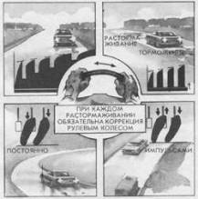

Сохранение устойчивости и управляемости
автомобиля при экстренном торможении
По мнению многих специалистов, торможение является наиболее эффективным способом повышения безопасности движения. Однако многие критические ситуации в той или иной степени связаны с экстренным снижением скорости, особенно на скользкой дороге. Главная проблема при этом – потеря устойчивости и управляемости автомобиля – возникает при полном или частичном блокировании колес. В реальных условиях не бывает идеально однородного покрытия, одинакового срабатывания всех колес, одинаковых по качеству покрышек. Следовательно, почти всегда процесс торможения сопровождается рысканьем передних колес, скольжением задних, а при высокой интенсивности торможения – сносом, заносом и вращением автомобиля.

Выбирайте способ торможения в зависимости от дорожных условий. Применяйте торможение с постоянным усилием только на повороте или неровностях. Начинайте торможение коротким импульсом, а затем увеличивайте тормозные усилия. Рыскающий автомобиль стабилизируйте рулением в каждый период растормаживания. Усиливайте антиблокировочный эффект включением понижающих передач. Не блокируйте колес!
В арсенале водителей высокой квалификации имеется несколько эффективных приемов, позволяющих сохранить устойчивость и управляемость автомобиля при экстренном торможении в самых неблагоприятных условиях. Признаками мастерства являются: прогнозирование потери устойчивости и управляемости; “чувство автомобиля”, позволяющее распознать признаки потери устойчивости и управляемости на самой ранней стадии; “двигательные автоматы” – приемы, позволяющие реагировать на потерю устойчивости и управляемости стабилизирующими действиями.
Прогнозирование и профессиональные чувства связаны со способностями и опытом, а конкретными действиями можно вооружить даже молодого водителя. Эти действия должны стать правилами экстренного торможения, тогда их эффект позволит существенно повысить безопасность.
Не применяйте торможения с постоянным усилием. Используйте импульсный способ приложения усилий – это позволит вам избежать грубых ошибок и длительного блокирования колес.
Первое тормозное усилие должно быть коротким и несильным. Оно позволит определить скользкость покрытия и спрогнозировать дальнейшие действия.
Резкое торможение может быть эффективным только до скорости 40 км/ч на сухом твердом покрытии. Во всех других случаях – это грубая ошибка, связанная с запоздалой реакцией, страхом и неуверенностью. Заставьте себя уменьшить силу нажатия на тормозную педаль, а если ошибка совершена, тотчас отпустите педаль после возникновения блокирования.
Когда ваше внимание приковано к торможению, вы забываете реагировать на рысканье автомобиля, которое, суммируясь, может перерасти в критический занос.
Отпуская на мгновение тормозную педаль при импульсном торможении, тотчас сделайте коррекцию рулевым колесом. Это избавит вас от необходимости применять максимальные скоростные возможности и круговое руление, чтобы стабилизировать автомобиль при заносе. Не торопитесь со следующим тормозным усилием, пока не вернете автомобиль к прямолинейному движению.
Выбрать самый эффективный способ экстренного торможения нужно в зависимости от дорожных условий:
– на ровном участке с постоянным (даже низким) коэффициентом сцепления применяйте ступенчатое торможение;
– на участке с неровностями применяйте прерывистое торможение. Отпускайте тормозную педаль перед неровностью;
– в повороте используйте плавное торможение с небольшим постоянным усилием;
– на крутом обледенелом спуске используйте прием “газ – тормоз”. При этом левая нога выполняет ступенчатое торможение, а правая нажимает педаль подачи топлива, противодействуя блокированию ведущих колес;
– на очень скользком покрытии (лед, покрытый водой) можно использовать торможение двигателем, если его эффективность достаточна для снижения скорости;
– на участке с меняющимся коэффициентом сцепления и неровностями необходим вариативный способ торможения с чередованием приемов и способов в зависимости от изменения внешних условий.
Для противодействия блокированию колес и сохранения устойчивости нужно применить следующие приемы комбинированного торможения:
– “перегазовку” перед включением понижающих передач;
– паузу при переводе рычага коробки передач с высшей на низшую передачу;
– задержку при включении сцепления.
Почувствовать начало дестабилизации (занос, снос, скольжение) можно только “мышечным чувством”, которое формируется контактом водителя с автомобилем. При экстренном торможении многие водители наклоняют корпус вперед. Это грубая ошибка! Нужно заставить себя отвести корпус назад к сиденью.
Не забывайте, что дополнительные подстилки, подкладки и мягкие чехлы ухудшают необходимый контакт. Тот же эффект дает утепленная зимняя одежда.
Дополнительную информацию может дать плотно пристегнутый ремень безопасности, особенно при высоком коэффициенте сцепления шин с дорогой (на асфальтовом или бетонном покрытии). При экстренном торможении ремень может “сигнализировать” о блокировании колес, заносе и вращении автомобиля.